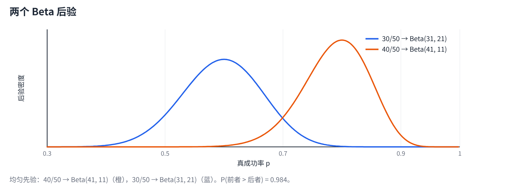
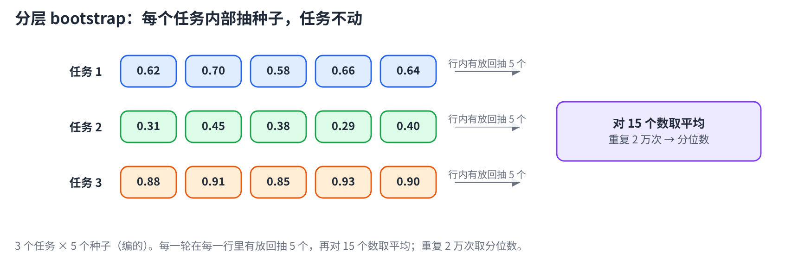
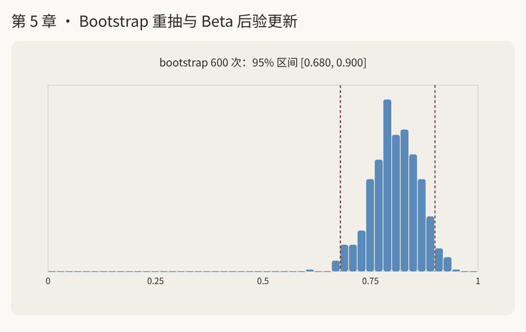

第 5 章 · Bootstrap 与 Beta 后验："B 比 A 好的概率"怎么算
本地运行
git clone https://github.com/wikieden/math-and-eval-stats
cd math-and-eval-stats/code/notebooks
pip install jupyterlab torch numpy
jupyter lab ch05_bootstrap_bayes.ipynb也可以下载后直接用 VS Code 打开 .ipynb 运行。需要 GPU 的章节在 Colab 里选「代码执行程序 → 更改运行时类型 → GPU」。
本章回答：不想背公式，能不能直接用数据"重抽"出一个区间？老板问"B 比 A 好的可能性有多大"，p 值回答不了这个问题，什么能回答？多个任务、每个任务几个种子的结果，区间该怎么算？
讲解日期：2026-11-25 · 上一章：第 4 章 配对比较 · 下一章：第 6 章 A/B 判定规则与多重比较
对应原文：Kress-Gazit 等materials/text/papers/robot-eval-best-practices-2409.09491.txt§6.4.2 L592–L596（均匀先验下的后验比较）；TRI LBMmaterials/text/papers/tri-lbm-careful-examination-2507.05331.txtL162–L165、L252–L254、L507–L510（Beta 后验的小提琴图）；Agarwal 2021materials/text/papers/rl-statistical-precipice-2108.13264.txtL127–L133、L149（分层 bootstrap 区间）
本章缩写：bootstrap = 自助法（"拽着自己的鞋带把自己提起来"：只用手里的数据估计不确定性）；Beta(a, b) = 贝塔分布：0 到 1 之间的一族分布，常当成功率的先验 / 后验；prior = 先验；posterior = 后验；P(B > A) = B 的真成功率高于 A 的概率。全部缩写见 附录 · 缩写与术语表
讲解
第一步：Bootstrap：把手里的数据当成总体，重抽很多次（2026-11-25）
类比：从一锅汤里尝了 50 勺，想知道"再尝 50 勺会差多少"，就把这 50 勺倒回一个小碗，从小碗里有放回地再舀 50 勺，重复几万次。
做法（百分位 bootstrap）：
- 手里有 n 次结果（k 个 1、n − k 个 0）；
- 有放回地抽 n 个，算一次成功率；
- 重复 B 次（比如 2 万次），得到 2 万个成功率；
- 取它们的 2.5% 和 97.5% 分位数，就是 95% 区间。
例子（第 2 章的 40/50 和 30/50）：
| 数据 | bootstrap 95% 区间 | 对照：第 1 章 Wilson 区间 |
|---|---|---|
| 40/50 | [0.680, 0.900] | [0.670, 0.888] |
| 30/50 | [0.460, 0.740] | — |
不用任何公式，区间和 Wilson 差不多。bootstrap 的价值在于任何统计量都能这么做：中位数、IQM（第 6 章）、两组之差、成功率之比，都只要"重抽 → 算 → 取分位数"。
一句话：bootstrap = 有放回重抽手里的数据很多次，用统计量的分位数当区间；公式写不出来的统计量也能用。
第二步：Beta 后验：均匀先验 + k 次成功（2026-11-25）
类比：天气预报员一开始对明天下不下雨毫无把握（各种可能都一样），每看到一个云图证据，就更新一次判断。
成功率 p 的先验取均匀分布 Beta(1, 1)（"0 到 1 之间都一样可能"）。看到 k 次成功、n − k 次失败以后，后验是：
这就是 Kress-Gazit（L594–L595）和 TRI LBM（L162–L165、L507–L510：在 Bernoulli 参数上取均匀先验，画后验的小提琴图）用的方法。
例子：
| 数据 | 后验 | 后验均值 | 95% 可信区间 |
|---|---|---|---|
| 40/50 | Beta(41, 11) | 0.788 | [0.669, 0.887] |
| 30/50 | Beta(31, 21) | 0.596 | [0.461, 0.724] |
后验均值 (1 + k)/(2 + n) 比 k/n 往 0.5 拉了一点（41/52 = 0.788，而 40/50 = 0.8）：先验像是多看了"1 次成功、1 次失败"。
可信区间 vs 置信区间：可信区间可以直接说"真成功率有 95% 的概率落在这里"；第 1 章的置信区间说的是"这种造区间的方法，100 次里约 95 次能盖住真值"。数据多时两者数值接近。

图 5-1 · Beta(41, 11)（40/50）和 Beta(31, 21)（30/50）的密度；重叠的部分越少，"B 比 A 好"越有把握一句话：均匀先验下，k/n 的后验是 Beta(1 + k, 1 + n − k)；可信区间可以直接读成"真值落在这里的概率"。
第三步：P(B > A)：老板真正想问的那个数（2026-11-25）
类比：两个射手各打了几枪，问"下一次比赛甲赢的概率"，比问"两人水平有没有显著差别"更直接。
两个后验各抽一个数，比大小，重复几十万次，数 B 赢的比例：
例子：
| 比较 | 结果 |
|---|---|
| P(40/50 的真成功率 > 30/50 的) | 0.984 |
| 差值的 bootstrap 95% 区间 | [+0.020, +0.380] |
和第 2 章一致：40/50 vs 30/50 在 5% 水平上显著（p < 0.05），后验也说 B 更好的概率 98%。但 0.984 这个数能直接拿来做决策（"有 98% 的把握换成新策略"），p 值不能（p 值是"假设一样时看到这么大差别的概率"，不是"一样的概率"）。
Kress-Gazit 的 13/20 vs 14/20（L594–L596）用的就是这种后验比较，结论是"不能说一个比另一个好"。
一句话：P(B > A) = 两个后验各抽一个比大小的胜率；它回答"B 更好的可能性有多大"，p 值回答不了。
第四步：多任务、多种子：分层 bootstrap（2026-11-25）
类比：评估一个学生，有 3 门课、每门考了 5 次。重抽时应该在每门课里各自重抽 5 次成绩，不能把 15 个成绩混在一起抽（那样可能抽出"全是数学"的组合）。
Agarwal 2021（L127–L133、L149）建议多任务结果用分层 bootstrap：每个任务内部对种子（或运行）有放回重抽，任务本身固定不动，再算汇总统计量。
例子（编的：3 个任务 × 5 个种子）：
| 任务 | 5 个种子的分数 |
|---|---|
| 1 | 0.62, 0.70, 0.58, 0.66, 0.64 |
| 2 | 0.31, 0.45, 0.38, 0.29, 0.40 |
| 3 | 0.88, 0.91, 0.85, 0.93, 0.90 |

图 5-2 · 每一行（任务）内部有放回抽 5 个种子，任务本身不重抽；再对 15 个数取平均，重复 2 万次平均 0.633，分层 bootstrap 95% 区间 [0.611, 0.655]。区间只反映"种子带来的波动"，不包括"换一批任务"的波动：任务是我们选定的，不是随机抽的。
场景代码：Agarwal 等人开源的 rliable 库就是这么算的（真实库的写法；本书环境没装 rliable，没跑过）：
from rliable import library as rly, metrics
scores = {"A": scores_A} # 每个算法一个 (运行数, 任务数) 的矩阵
agg = lambda x: np.array([metrics.aggregate_iqm(x), metrics.aggregate_mean(x)])
point, ci = rly.get_interval_estimates(scores, agg, reps=50000) # 分层 bootstrap 区间
一句话：多任务多种子时，在每个任务内部重抽种子，任务不动；区间反映的是种子的波动。
动画演示：bootstrap 重抽与后验更新

可交互版：animations/05-bootstrap-bayes.html（滑块调成功次数 k 和总次数 n；下拉切换"bootstrap / 后验"）。
怎么看：
- bootstrap：上排 n 个圆点是原始数据，每一帧有放回抽一遍（被抽中的亮起），下方直方图一点点长出来（第一步）；
- 后验：从平的 Beta(1, 1) 开始，每加一次成功或失败，曲线就更新一次，最后停在 Beta(1 + k, 1 + n − k)（第二步）；
- 两个后验同时画出来时，右上角显示 P(B > A)（第三步）。
练习与作答记录
题 1（第二步 后验）：一个策略 9/10 成功。写出均匀先验下的后验分布，后验均值是多少？为什么不是 0.9？
作答：（待作答）
题 2（第一步 bootstrap）：一组 10 次结果全部成功（10/10）。百分位 bootstrap 给出的区间是什么？这说明 bootstrap 在什么情况下会出问题？
作答：（待作答）
题 3（第三步、第四步）：一份报告写"5 个任务上 B 平均比 A 高 3 个点"，每个任务只跑了 1 个种子。你能用分层 bootstrap 给出区间吗？如果不能，要补什么数据？
作答：（待作答）
口诀
有放回重抽几万次，分位数就是区间，什么统计量都能套；
均匀先验加 k 次成功，后验是贝塔 1 加 k、1 加 n 减 k；
两个后验各抽一个比大小，胜率就是 B 更好的概率；
多任务多种子分层抽，任务不动只抽种子。
本章复习卡片
ST36（百分位 bootstrap 的做法）、ST37（Beta 后验的形式、可信区间 vs 置信区间）、ST38（P(B > A) 怎么算、它和 p 值的区别）。练习做完后，按答错、卡住的地方补上。
附录 · 延伸阅读
留给以后深入学习用，不影响本章主线。★ 是建议先读的。
推荐阅读
| 读什么 | 读哪里 | 读它为了什么 |
|---|---|---|
| ★ Kress-Gazit 等《Robot Learning as an Empirical Science》 | §6.4.2 L590–L600、图 11 | 用后验分布比较两个策略的真实案例 |
| ★ TRI LBM《A Careful Examination of Large Behavior Models》 | L160–L170、L250–L256、L505–L512 | 大规模真机评测里怎么画后验小提琴图、怎么标"可区分" |
| ★ Agarwal 等《Deep RL at the Edge of the Statistical Precipice》 | §3–4；表 1 L140–L170 | 分层 bootstrap 区间、为什么少量运行时点估计不可靠 |
| Bouthillier 2021 | L116–L118 | 推荐用 out-of-bootstrap 代替固定的测试集 |
数学原理
- 共轭先验：伯努利似然 \(p^k(1-p)^{n-k}\) 乘以 Beta(a, b) 先验 \(p^{a-1}(1-p)^{b-1}\)，结果还是 Beta(a + k, b + n − k)：先验和后验同一族，更新只是"加计数"（第 8 章贝叶斯公式）。
- Beta 的均值：Beta(a, b) 的均值是 a/(a + b)，所以均匀先验下后验均值 = (1 + k)/(2 + n)，叫拉普拉斯平滑（加一平滑）。
- bootstrap 为什么有效：经验分布是总体分布的估计；n 足够大时，"从经验分布里抽样"的波动接近"从总体里抽样"的波动。n 很小、或者统计量卡在取值范围的边上时，这个近似会变差。
公式清单
| 公式 | 意思 |
|---|---|
| \(p \mid k, n \sim \text{Beta}(1 + k, 1 + n - k)\) | 均匀先验下的后验 |
| 后验均值 \(= (1 + k)/(2 + n)\) | 加一平滑 |
| \(P(p_B > p_A) \approx \frac1M\sum\mathbb 1[p_B^{(m)} > p_A^{(m)}]\) | 蒙特卡洛估 B 更好的概率 |
| 百分位区间 \(= [\hat\theta^*_{2.5\%},\ \hat\theta^*_{97.5\%}]\) | bootstrap 区间 |
代码对照：把本章的数字用代码算一遍
代码在仓库本地
math-and-eval-stats/solutions/chapter-code/ch05_bootstrap_bayes.py，配套测试tests/test_ch05.py：
bash cd math-and-eval-stats/solutions/chapter-code uv run python ch05_bootstrap_bayes.py uv run pytest tests/test_ch05.py
讲义 ↔ 代码：
| 讲义 | 公式 | 写法 | 跑出来 |
|---|---|---|---|
| 第一步 bootstrap | 百分位 | bootstrap_ci(40, 50) |
[0.680, 0.900] |
| 第二步 后验 | Beta(1+k, 1+n−k) | beta_posterior(40, 50)、credible_interval(40, 50) |
均值 0.788，[0.669, 0.887] |
| 第三步 P(B > A) | 蒙特卡洛 | prob_b_better(40, 50, 30, 50) |
0.984 |
| 第三步 差值区间 | bootstrap | diff_bootstrap(40, 50, 30, 50) |
[+0.020, +0.380] |
| 第四步 分层 | 任务内重抽 | stratified_bootstrap_mean(SCORES) |
0.633，[0.611, 0.655] |
关键几行：
means = rng.choice(data, (reps, n), replace=True).mean(1) # 一次抽 reps 组，每组有放回抽 n 个
pb = rng.beta(1 + kb, 1 + nb - kb, draws) # B 的后验样本
pa = rng.beta(1 + ka, 1 + na - ka, draws) # A 的后验样本
prob = np.mean(pb > pa) # B 赢的比例
idx = rng.integers(0, s, (reps, t, s)) # 分层：每个任务各自抽种子的下标
代码里才看得到的 3 件事：
- 成功率的 bootstrap 可以直接用二项分布抽：
diff_bootstrap里写成rng.binomial(n, k/n)，和"有放回抽 n 个 0/1"是同一个分布，只是快得多。 - 蒙特卡洛的误差：40 万次抽样时 P(B > A) 的标准误约 √(0.984 × 0.016 / 400000) ≈ 0.0002，小数点后三位稳定。
- 分层 bootstrap 用
take_along_axis一次算完：(reps, 任务, 种子)三维下标，避免写 2 万次循环。
自己改一改（不影响练习答案）：
- 把先验换成 Beta(10, 10)（"我相信成功率在 0.5 附近"），40/50 的后验均值变成多少？
stratified_bootstrap_mean里把任务 2 的分数全部加 0.3，区间的宽度变不变？为什么？